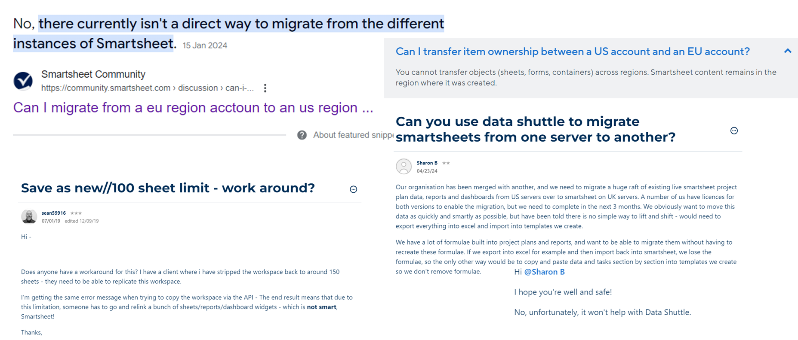
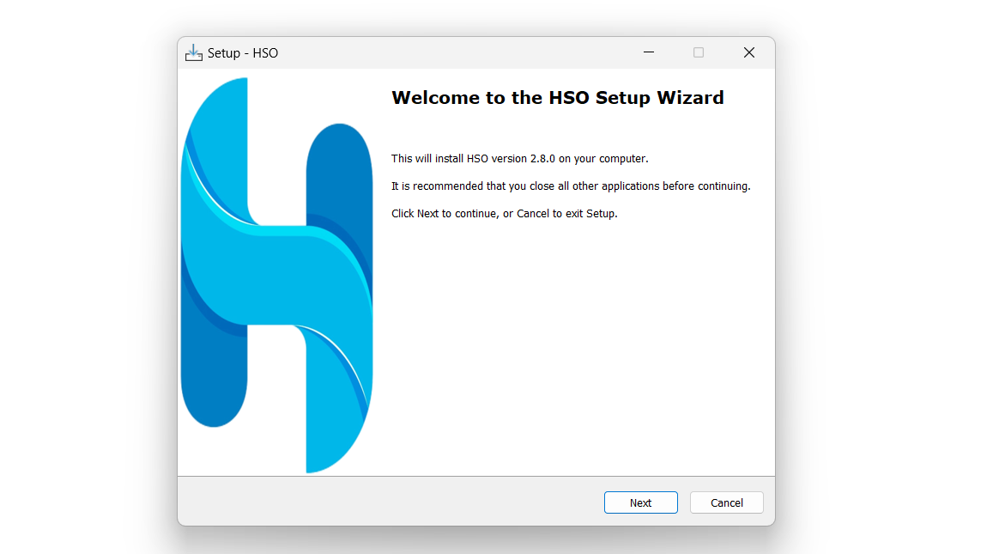
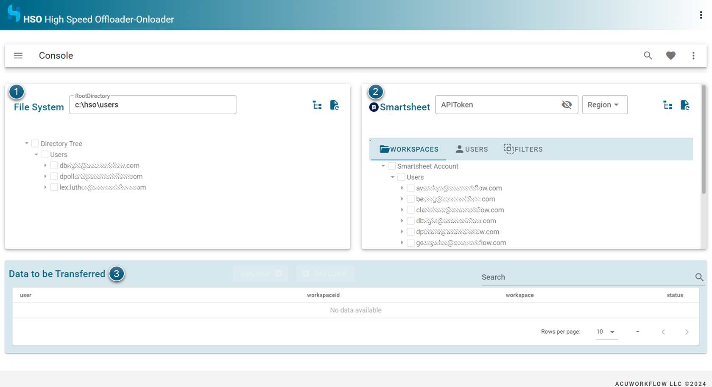
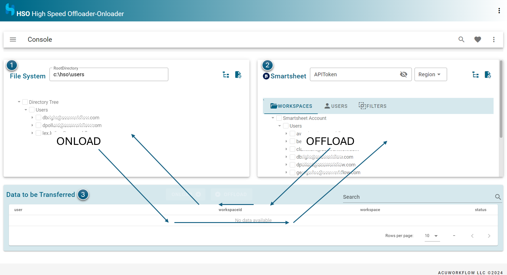
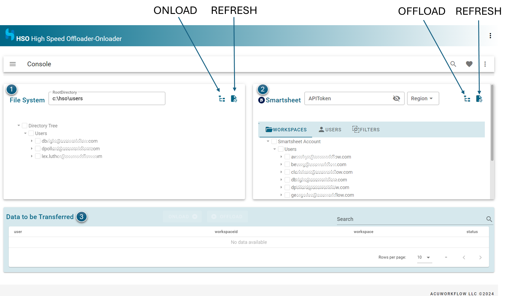
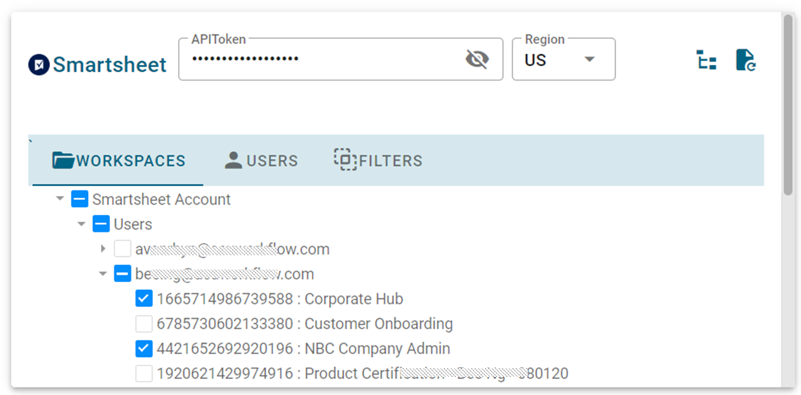
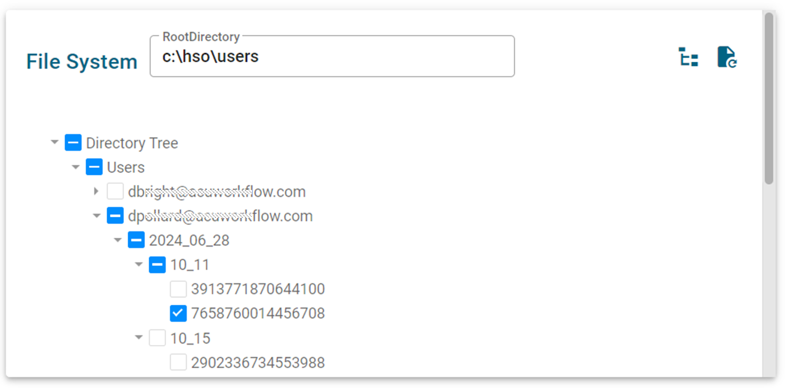
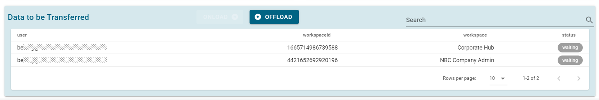
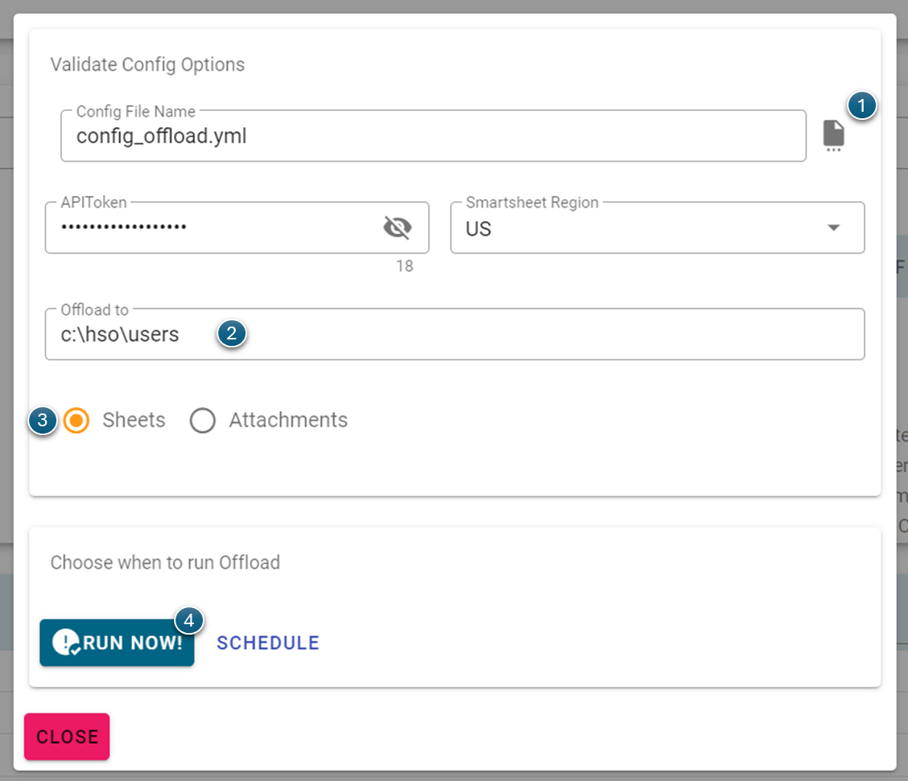
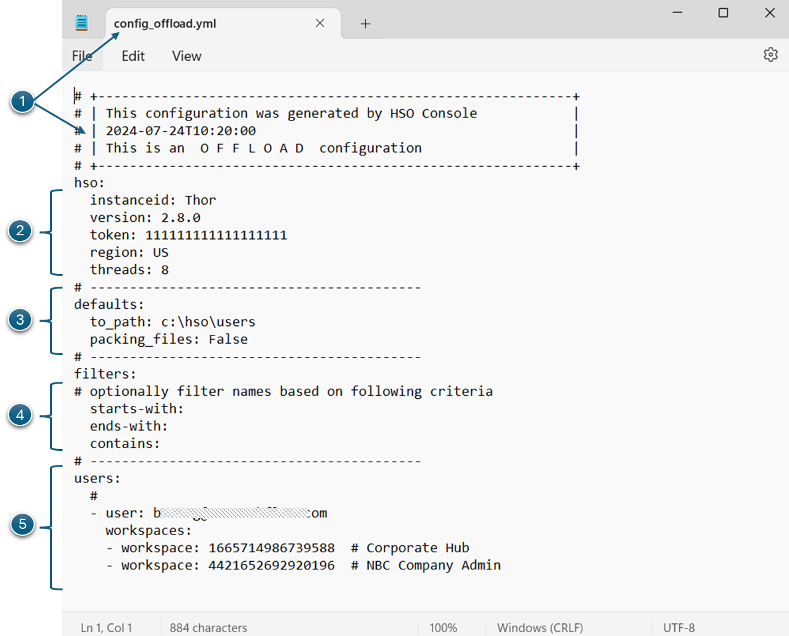

High Speed On-Offloader (HSO)
Home ↵

Home
Acuworkflow gives you a simple, no-code data movement platform to copy workspaces from and to Smartsheet without the inherent 100-sheet limitation. Whether you want to migrate, protect or replicate your data, we have just the tool, it is called the HSOfloader/Onloader or HSO in short.
Overview
AcuWorkflow a leading provider of securing Smartsheet data is pleased to announce its latest offering called HSO. It is a new bulk Data Movement platform to support migrations across the various Smartsheet regions.
HSO is ideal for moving bulk data in or out of Smartsheet overcoming the 100-item limitation. What sets it apart is the ability to operate at Account, User, or Workspace level whilst maintaining Smartsheet folder hierarchies on subsequent uploads. These capabilities further expand SmartBackup tools designed to help businesses secure, protect, and govern Smartsheet data.
Smartbackup
HSO used in conjunction with SmartBackup increases accuracy, mitigates risks, and helps with compliance requirements. In stand-alone mode, it excels as a bulk data migrator, take-on engine, or solution duplicator.
For access visit AcuWorkflow.com.
Use Cases
- Data Center Migration – Migrate between Smartsheet Regions, something near impossible in the current arrangement
- Move large data in/out of Smartsheet – DRP, Data Protection, Enriching, Seed-Feed, Attachment re-location …
- Bulk Data Take-on - get bulk data from other systems, Smartsheet alternative platforms like ClickUp, Monday.com, Asana ….
- Programme Management - Blueprinting – Stamp master Project arrangements, Project Retirements & Freezing
- Solution stepping – version roll on/off nightly’s weekly’s, Sandbox seeding – make data available (anonymized and de-sensitized)
- Regulatory Compliance – regulatory record keeping and compliance.
Getting started
Getting started with HSO is very simple and could be achieved with three easy steps.
- Download and install the latest version of HSO.
- Configure user details and other options
- Run your first Offload or further customize.
Positioning HSO
Broadly speaking
HSO is a Premier Offering from AcuWorkflow and is ideally used in conjunction with SmartBackup
- HSO licensing options still being firmed up, anticipates AcuWorkflow SmartBackup EE licensing to operate, though at no/minimal additional cost
- Positioned as a high-speed data mover to copy/move workspaces between Smartsheet regions or assist with solution migrations
- Positioned to complement SmartBackup Export or be a stand-alone bulk offloader/onloader
- Separate installation SETUP file to SmartBackup
- HSO can operate at Workspace, User or Account level
- Bypass the Smartsheet 100 resource item limit associated with the copy-ing of items within workspaces/folders
Datashuttle
- Somewhat competes with Smartsheet DataShuttle with the following differentiators
- Datashuttle runs anywhere from $12k-$100K which makes HSO very price competitive (SBU EE inclusive)
- Datashuttle can only offload to cloud drives Google and Onedrive(SP), HSO can do native filesystems(local & network)
- Datashuttle operates at sheet level, HSO operates at workspace level (user and account can be configured). If you only want to deal with a sheet, use the SmartBackup Export function.
- Datashuttle cannot inter-operate between regions, something HSO is ideally positioned for
- Datashuttle primarily works using user automations in the context of a user; HSO on the other hand operate accross users thus providing coverage for the complete account.
Need for
The following screenshots illustrates requests by the Smartsheet community outlining the need for a product like HSO

Differences to SmartBackup Export
HSO is designed to supplement high intensity sites already using SmartBackup Export
Export allows one to export sheets from Smartsheet to a local drive. It is ideal for creating regular copies of your data for snapshot and history purposes. Broadly speaking, Export is use in the Backup/Recovery scenario where a sheet is kept outside Smartsheet for recovery or compliance reasons. On the other hand HSO is more of a data migrator though it can also be use for recovery purposes, in fact ideal for solution DRP reasons.
| Criteria | Export | HSO |
|---|---|---|
Unit of work |
Work with a Sheet | Work with a Workspace/s |
Scope |
Incremental, Specific or All for a given User | All Sheets in a Workspace/s for a given User |
Output Structure |
Nested Folder with ZIP files | Flat structure with control and XLSX files |
Input Structure |
Restore Row or sheet manually, cannot recreate Folder structure | Restore workspace, can re-create folder structure |
Names |
Files and Folders have original names but suffer from ANSI only and dupe issues | ID's with Names in control file |
Recovery |
Manual | Automated |
Ended: Home
Guides ↵
Setup Guide ↵
Setup Guide - Installation
Download
Download and install the latest version of HSO.
Install
The download consists of a Windows Setup file, double-click to start the Installation process.

Follow the Wizard steps.
Installation Password
The installation password is YellowOrange
Installation location
You can choose where to install HSO but usually we recommend the default, which is c:/hso
Info
Ensure you have write-access to the space. Under certain circumstances when hosting in a cloud platform such as AWS or Microsoft Azure, the Windows Image for c:/hso is marked as read-only.
Installation verification
Invoke HSO Gui by double-clicking on the Desktop Icon. It will take a couple of minutes and then you should see the HSO Gui screen in the browser. If not contact AcuWorkflow support.
Setup Guide - Configuration
Smartsheet API Token
Obtain your Smartsheet API Token for a SysAdmin user. The process is described in the SmartBackup documentation
Keep it secure and on-hand becuase you need to input it into the Smartsheet Pane when interaction is needed with Smartsheet. Also keep in mind the Smartsheet regionyou are working with. Currently by design this value is not saved/remembered accross HSO Gui sessions or refreshes.
Warning
The Smartsheet API Token is recorded in the config files for use by HSOffLoader or HSOOnloader. Ensure these files are properly secured under admin control.
File location
Smartsheet data will be offloaded to a file location of your choice. Identify the location and ensure enough space is available for subsequent offloads. This location you need to input into File System Pane when interaction is needed with the filesystem. Currently by design this value is not saved/remembered accross HSO Gui sessions or refreshes.
Ended: Setup Guide
User Guide
HSO is a data movement platform for rapidly moving data from and to Smartsheet at workspace level.
It comprises of the following components:
- GUI for online UI and ease of use
- Config Files to steer what needs to be on or offloaded
- HSOffloader for moving data out of Smartsheet
- HSOnloader for moving data into Smartsheet
HSO GUI
HSO can be configured, managed and run via the HSO GUI. It can also be run head-less which mean without a GUI. head-less mode most often use when you want to run HSOffloader or HSOnloader via a schdeluer on regular intervals. In such cases one can still use the GUI to help create the configuration files but thereafter it is not needed anymore.

- Smartsheet Pane It shows your Smartsheet account where you want to
offload Smartsheet data fromoronload data from into Smartsheet. - FileSystem Pane It shows the designated area where you want to
offload Smartsheet data tooronload data from here into Smartsheet. - Data to be Transferred Shows which users and/or workspaces will be transferred
Usage
Primarily the HSO GUI is use to perform an OFFLOAD From Smartsheet to a File System or a ONLOAD from FileSystem to Smartsheet

This is done with two buttons for each environment.

- REFRESH Refresh list of Users and Workspaces from Smartsheet
- OFFLOAD Create offload config file based on selected data and other settings and show result in data to be transferred
- REFRESH Refresh list of User Workspaces from File System (e.g. previously offloaded workspaces)
- ONLOAD Create onload config file based on selected data and other settings and show result in data to be transferred
Smartsheet Pane
The right side of the screen shows a hierachical view of Smartsheet Account resolved by the APIToken Key. This view is similar to viewing the Account Structure in the Smartsheet UI, though an effort was made to simplify it a bit.

Selections of WHAT to offload is done by choosing any combination of:
- Workspaces Selected Workspaces from the Workspaces Tab and/or
- Users All workspaces for a given User/s from the Users Tab and/or
- Filter Include only certain Sheets matching criteria within from the Filters Tab
Workspaces
When selecting from the Workspaces tab you will see each Workspace is prefixed with its Smartsheet ID. This provides an easy way to ensure you are selecting the right workspace.
- Clicking the Refresh button, refresh the Smartsheet Users and Workspaces available. Only perform this when you view the latest information. It will take a couple of minutes to complete.
- Clicking the Data to be transferred button, creates a list of items ready to be transferred. Note this does not perform the on or offload operation yet.
File System Pane
The left side of the screen shows a hierachical view of the filesystem pointed to by the value in Rootdirectory. This view is similar to viewing the folders in Windows Explorer, though an effort was made to simplify it a bit.

Info
The root directory points to the root of the filesystem you are designated as the offload to or onload from area, Typically this is c:/hso/users.
- Clicking the Refresh button, refresh the directory tree from the file system. Perform this every time when a new root directory is supplied.
- Clicking the Data to be transferred button, creates a list of items ready to be transferred. Note this does not perform the on or offload operation yet.
Data to be transferred pane
The bottom of the screen shows a collection of data that will be transferred. The appropriate button will be shown depending if you are Offloading or Onloading

Clicking the Offload button on the Data to be transferred pane will show the following screen

Ensure the details are coorect, also calling out the following:
- Config File Name of the generated config file that will drive HSOffloader. Clicking on the icon will open Notepad and you can optionally edit the file.
- Offload to Ensure that the path you want to offload the Smartsheet data is the correct one.
- Sheets/Attachments Choose whether you want to offload Sheets or attachments
- Run Now Click on Run Now if you want to start HSOffloader. Optionally you can define a task in Windows Task scheduler to run it based on a schedule.
Config Files
Config files are yaml based files that drives the parameters neccessary for HSOffloader and HSOnloader to function. These are automatically generated by HSO GUI and you can optionally edit them at any time thereafter. If you are not familiar with yaml files, they are ordinary editable text files but the indentations shown should be observed using white spaces.

-
Top Section Shown is the config file name and a block of intro comments. # denotes a comment.
# +------------------------------------------------------------+ # | This configuration was generated by HSO Console | # | 2024-07-24T10:20:00 | # | This is an O F F L O A D configuration | # +------------------------------------------------------------+ -
HSO main section Ensure APIToken and Region are correct.
hso: instanceid: Thor version: 2.8.0 token: 111111111111111111 region: US threads: 8 -
defaults section These default values would be used.
defaults: to_path: c:\hso\users packing_files: False -
filters section Filter criteria.
filters: # optionally filter names based on following criteria starts-with: ends-with: contains: -
users section Specify what Users/workspaces should be offloaded.
-
Sample, specific workspaces that needs to be offloaded
users: # - user: jdoe@acme.com workspaces: - workspace: 1665714986739588 # Corporate Hub - workspace: 4421652692920196 # NBC Company Admin # -
Sample, offload all workspaces for a set of users
users: # - user: jdoe@acme.com - user: janedoe@acme.com - user: fgump@gumpco,com #
-
Smartsheet API Token
The Smartsheet API Token is recorded in the config files for use by HSOffLoader or HSOOnloader. Ensure these files are properly secured under admin control.
HSOffloader
To use HSOffloader, you need a destination and a Smartsheet API key. You also need to tell HSOffloader where the offloaded data should land. All of this is specified in the relevant config file.
You may choose how to run this
- Once off Ideal for a right now snapshot or dealing with a point-in-time workspace copy.
- Regular Intervals Ideal for planned schedules
It can be invoked in any of the following ways
- From the HSO GUI by clicking on the Run now button
- From Windows CLI by opening a Windows Terminal or CLI, then cd to the HSO apps directory and run hsoffloader
- From Windows Explorer by double clicking on hsoffloader icon
- From Windows Task Scheduler
HSOnloader
To use HSOnloader, you need a source and a Smartsheet API key. You also need to tell HSOnloader where the onloaded data should land. All of this is specified in the relevant config file.
You may choose how to run this
- Once off Ideal for a right now snapshot or dealing with a point-in-time workspace copy.
- Regular Intervals Not advisable unless your requirements dicate this
It can be invoked in any of the following ways
- From the HSO GUI by clicking on the Run now button
- From Windows CLI by opening a Windows Terminal or CLI, then cd to the HSO apps directory and run hsonloader
- From Windows Explorer by double clicking on hsonloader icon
- From Windows Task Scheduler
Reference Guide
This section is intended as a general reference and specification set. If you are new to HSO, you will need to use the full documentation.
Specifications
Folder and subfolder arrangement
The following illustrates the required folder arrangement on the file system where data was offloaded to or onloaded from.
The folder arrangement is automatically created everytime you use HSOffloader
HSOffloader expects this arrangement and therefore if you want to load foreign data(data that was not offloaded by HSOffloader) you must manually create set subfolder structure.
C:.
├───johnie.davids@gumpy.com
│ └───2024_07_04
│ └───14_27
│ ├───4420884027991940
│ ├───5546783934834564
│ └───7235633795098500
├───sarah.johnson@gumpy.com
│ └───2024_06_28
│ ├───10_11
│ │ ├───3913771870644100
│ │ └───7658760014456708
│ ├───10_15
│ │ ├───2902336734553988
│ │ ├───3005471784232836
│ │ ├───3222754179737476
│ │ ├───3458625596352388
│ │ ├───3814151177955204
│ │ ├───3913771870644100
│ │ ├───7658760014456708
│ │ └───7842162231535492
│ ├───16_25
│ │ ├───3814151177955204
│ │ └───3913771870644100
│ └───17_00
│ └───BluePrint
└───lex.luthor@gumpy.com
└───2024_07_08
└───13_40
└───2227469597075332
Arrangement
Subfolders from root Username -> YY_MM_DD -> HH_MM -> WorkspaceID -> offloaded sheets or attachments for the workspace
All data is offloaded to the root directory pointed to by the to_path in the configuration file Each Offload run will create a folder hierarchy hanging of this root. Starts with the User, then a subfolder for current-date(YYYY_MM_DD) then the time(Offload-HH_MM) and finally the id of the workspace. This will contain the offloaded data.
Workspace structure
All data for a Workspace is in a single flat folder with generated control files preceded by !~!. Each Smartsheet Sheet is labeled with its original sheetid as an Excel file.
!~!sheets.csv
!~!workspace.txt
166872315389828.xlsx
4274848076720004.xlsx
4630737992345476.xlsx
5789355617871748.xlsx
7272749227528068.xlsx
8655598356064132.xlsx
If attachments was offloaded each attachment also labeled by its original Smartsheet ID and cast as its original filetyepe, e.g. PDF, .PNG etc.
Onload scenarios
Data used by HSOnloader is expected to be in a certain arrangement, automatically created by HSOffloader. Therefore if the data was not created by HSOffloader, ceartain steps must be followed.
Note
Only CSV or XLSX files will be onloaded.
Folder Hierarchies will automatically be re-created within Smartsheet
!~!Sheets.csv controls which sheets will be onloaded.
Currently onloading attachments under development.
HSOffloader created data
- HSO Offloaded data – Onload data previously offloaded from Smartsheet by HSOffloader
-
HSO Offloaded data filtered – Onload selective data previously offloaded from Smartsheet by HSOffloader
- Selected Sheets
- Selected Folders
Not HSOffloader created data
- SmartBackup Exported Sheets – Onload sheets previously exported by SmartBackup
- Bulk extracted data – Data in XLSX or CSV formats, typically used in Data Take-on scenarios
Ended: Guides
About
Acuworkflow gives you a simple, no-code data movement platform to copy workspaces from and to Smartsheet without the inherent 100-sheet limitation. Whether you want to migrate, protect or replicate your data, we have just the tool, it is called HSO
AcuWorkflow a leading provider of securing Smartsheet data is pleased to announce its latest offering called HSO. It is a new bulk Data Movement platform to support migrations across the various Smartsheet regions.
HSO is ideal for moving bulk data in or out of Smartsheet overcoming the 100-item limitation. What sets it apart is the ability to operate at Account, User, or Workspace level whilst maintaining Smartsheet folder hierarchies on subsequent uploads. These capabilities further expand SmartBackup tools designed to help businesses secure, protect, and govern Smartsheet data.
HSO used in conjunction with SmartBackup increases accuracy, mitigates risks, and helps with compliance requirements. In stand-alone mode, it excels as a bulk data migrator, take-on engine, or solution duplicator.
Copyright
The above copyright notice and this permission notice shall be included in all copies or substantial portions of the Software.
THE SOFTWARE IS PROVIDED "AS IS", WITHOUT WARRANTY OF ANY KIND, EXPRESS OR IMPLIED, INCLUDING BUT NOT LIMITED TO THE WARRANTIES OF MERCHANTABILITY, FITNESS FOR A PARTICULAR PURPOSE AND NON-INFRINGEMENT. IN NO EVENT SHALL THE AUTHORS OR COPYRIGHT HOLDERS BE LIABLE FOR ANY CLAIM, DAMAGES OR OTHER LIABILITY, WHETHER IN AN ACTION OF CONTRACT, TORT OR OTHERWISE, ARISING FROM, OUT OF OR IN CONNECTION WITH THE SOFTWARE OR THE USE OR OTHER DEALINGS IN THE SOFTWARE.